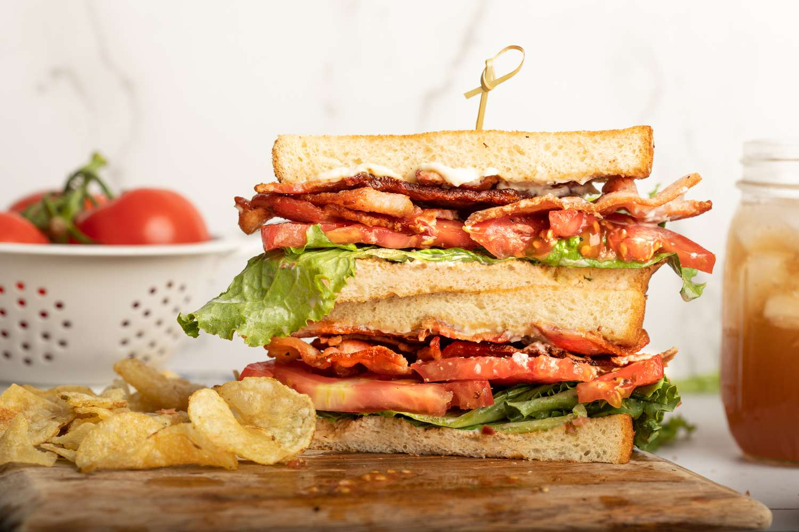

BLT

Description
BLT stands for bacon, lettuce, and tomato, and commonly refers to a
sandwich... A very yummy sandwich. Usually includes mayo and possibly
red onion. The bacon should be nice and crispy. Especially tasty when
hungry... which, yup, shouldn't write this while hungry...
Ingredients
- 2 slices of bread
- 4 strips of crispy bacon
- 2 large leafs of lettuce
- 2 large slices of tomato
- 2 tablespoons of mayonaise
- 1 pinch of salt
- 1 pinch of pepper
Steps
-
Make sure you have the necessary ingredients... I can't help you cook
the bacon. Sorry...
-
Get out a couple slices of bread, toasted if desired, and spread a tablespoon
of mayonaise on each side.
-
Place the bacon, lettuce, and tomato on one side, in that order.
-
Add salt and pepper on top of the tomato.
-
Put the sandwhich together and enjoy.